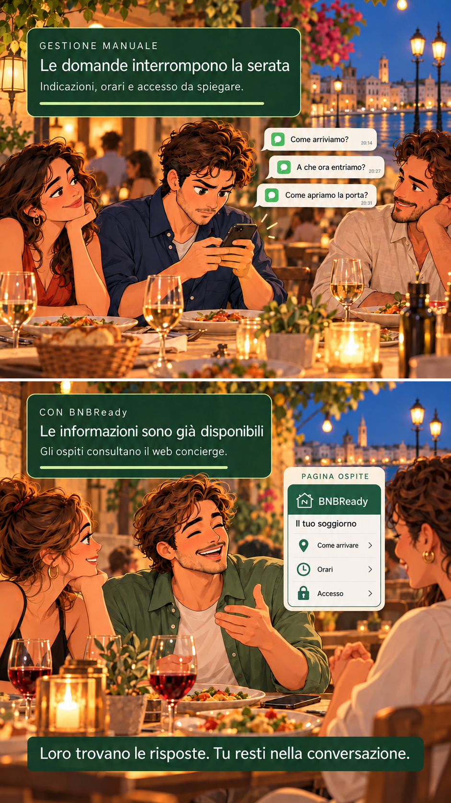
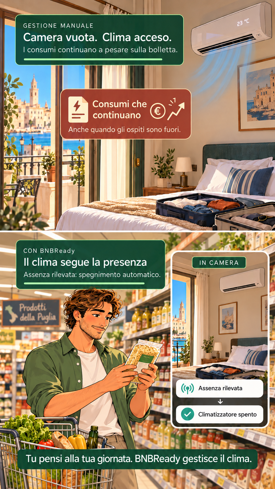

Organizzare i soggiorni.
Coordinare le attività.
BNBReady nasce per semplificare le attività quotidiane di una struttura ricettiva: dalla gestione delle prenotazioni alle risposte alle domande ricorrenti, dalla raccolta dei dati degli ospiti alle comunicazioni agli enti competenti.
01 · Prenotazioni
Acquisizione delle informazioni del soggiorno e gestione delle prime comunicazioni agli ospiti.
Organizzazione della prenotazione
BNBReady offre una visione d’insieme delle tue strutture. Calendari e stato delle prenotazioni sono disponibili nel gestionale, per consultare la situazione attuale e seguire le diverse fasi dei soggiorni.
- Calendario e camere
Consulta le date di arrivo e partenza e la camera o l’alloggio associato a ogni prenotazione.
- Informazioni degli ospiti
Ritrova i dati del soggiorno e le informazioni degli ospiti in un unico punto di consultazione.
- Messaggistica WhatsApp integrata
Gestisci le comunicazioni WhatsApp con gli ospiti direttamente dal gestionale.
02 · Pagina ospite
Informazioni sul soggiorno e raccolta dei dati in una pagina dedicata.

Informazioni prima e durante il soggiorno
La pagina ospite raccoglie le informazioni della struttura e le rende consultabili attraverso un collegamento dedicato. Invita inoltre gli ospiti a compilare in anticipo i dati anagrafici, i numeri dei documenti e gli orari previsti di arrivo e partenza.
- Indicazioni per arrivare
Condividi il percorso, il punto d’ingresso e le informazioni pratiche della struttura.
- Orari e istruzioni
Rendi disponibili gli orari di riferimento e le indicazioni per l’arrivo e il soggiorno.
- Servizi di accesso
Gli ospiti autorizzati possono utilizzare il comando di apertura dalla pagina dedicata, con una serratura compatibile integrata nel sistema.
03 · Check-in e accessi
Dati raccolti in anticipo per completare il check-in e organizzare l’ingresso.
Self check-in
Dopo aver compilato i dati richiesti per il check-in, gli ospiti autorizzati possono aprire l’ingresso premendo un pulsante nella propria pagina dedicata. L’accesso digitale richiede una serratura compatibile integrata nel sistema.
- Dati pronti per Alloggiati Web
Le informazioni raccolte per il check-in sono disponibili per predisporre le comunicazioni degli ospiti attraverso Alloggiati Web.
- Tassa di soggiorno e PayTourist
BNBReady gestisce la tassa di soggiorno e automatizza le comunicazioni a PayTourist attraverso l’integrazione accreditata.
- Accessi autorizzati e limitati nel tempo
Le autorizzazioni di apertura sono collegate al soggiorno e alle fasce orarie configurate, così l’accesso è disponibile solo nel periodo previsto.
04 · Presenza e climatizzazione
La domotica al servizio dell’ospitalità e della gestione dei consumi.

Automazioni della camera
Le integrazioni domotiche collegano sensori e climatizzazione. Le condizioni e i tempi di attesa sono configurati per ciascun ambiente.
- Rilevamento dell’assenza
Sensori di presenza e contatti della porta concorrono a verificare che la camera sia vuota.
- Spegnimento automatico
Quando le condizioni configurate sono soddisfatte, il sistema interrompe il funzionamento del climatizzatore.
- Impostazioni di comfort
Scenari di accoglienza e rientro per luci e clima, in base ai dispositivi installati e alle impostazioni della struttura.
05 · Checkout e pulizie
Comunicazioni prima della partenza e programma operativo per il personale delle pulizie.
Coordinamento del checkout
BNBReady invia messaggi WhatsApp automatici per accompagnare la partenza e comunica al personale il programma delle camere da preparare.
- Promemoria programmati
Invia le istruzioni di checkout in relazione alla data di partenza.
- Comunicazioni al personale
Organizza le camere da preparare e gli orari degli interventi, quindi invia il programma alle persone incaricate delle pulizie.
Valutiamo le esigenze della tua struttura.
Gestisci una struttura ricettiva o stai avviando un progetto di ospitalità? Contattaci per un confronto: condivideremo la nostra esperienza e valuteremo insieme l’approccio più adatto alla tua organizzazione.